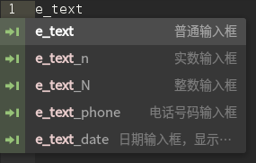
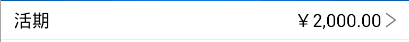

使用基础控件和公共控件
1 概述
本章节将介绍如何在编写界面时使用已有的基础控件和公共控件，以提高代码编写的效率。我们以一个简单的账户查询界面为例来说明它们的使用方法，界面的显示效果图如下：

2 实现方法
账户查询界面的完整实现代码为：example.xml
2.1 使用基础控件
2.1.1 说明
在atom的EMP插件工具中集成了基础控件库，提取了一些常用的控件供我们使用，其中包括最基本的标签如input:text，select，button等，以及一些常见的组合控件如title，menu，footer等，详细内容可以在atom中点击Emp菜单下的[ERT UI Guide]进行查看。
基础控件的使用很简单，每个基础控件都对应了一个关键字，编写代码时打出关键字EMP工具就会根据关键字查找相应控件并进行代码补全。例如基础控件中有一个普通的输入框，其关键字为"e_text"，使用该输入框时只用在代码段中输入"e_text"，选择相应的控件按回车键后，"e_text"控件的代码段就会出现在页面中。如下图所示：

引入代码段后，还需要我们在当前页面引用基础控件的css文件，目前基础控件的所有css样式都放在"eui.css"文件中，该样式文件会在我们用EMP插件创建app时自动放在app的公共css文件夹下，如果当前app下没有该样式文件，也可以通过EMP菜单下的 Setting View -> EMP App 面板 -> Refresh UI Lib 按钮添加该文件，默认存放路径也是此app的公共css文件夹下。5.3的客户端中新增加了css缓存的功能，也可以选择在项目入口处添加对公共样式文件的引用，并设置global=true，这样就不需要在每个页面中都引用公共的样式文件了。
当然，基础控件中所提供的控件并不能完全符合我们所需的效果，在需要定制自己的样式时，请不要修改"eui.css"文件，可以在其原引用的样式后再增加一个自定义的样式，以覆盖之前的样式。例如上面我们使用了"e_text"控件，插入的代码段如下：
<input class="ert_w320_h50_blue_f16w" type="text" name="some_name" value="" hold="请输入" border="0"/>
其引用的样式定义如下：
.ert_w320_h50_blue_f16w{width: 320px;height: 50px;background-color: #147EEC;font: 16px;color: #FFFFFF;}
而我们实际想要的效果是字体颜色为红色，字体大小为18px，则我们可以修改代码段如下：
<input class="ert_w320_h50_blue_f16w,input_text_custom" type="text" name="some_name" value="" hold="请输入" border="0"/>
并在该界面的style中添加"input_text_custom"的样式定义如下：
<style>
.input_text_custom {color:#FF0000;font-size:18px;}
</style>
这样就得到了我们想要的效果。
2.1.2 示例
现在我们使用基础控件来实现我的账户界面。根据页面效果，并参照基础控件库列表，定出界面上可以用基础控件实现的部分：标题栏，select下拉框，卡片第一行。
2.1.2.1 标题栏
预期效果图：

首先我们使用基础控件中已有的"e_header1"控件，插入的原代码段如下：
#{local bar_flag = window:supportStatusBarInXML();}#
<!--Title-->
<div class="ert_position" align="center" valign="middle" border="0">
#{if bar_flag then}#
<div class="ert_w320_h20_blue" border = "0"></div>
#{end}#
<div class="ert_w320_h50_blue_f16w" align="center" valign="middle" border="0">
<div class="ert_w50_h45_l10" border="0" valign="middle" >
<img src="btn_back.png" class="ert_w8_h14"></img>
<div class="ert_div_w10" border="0"></div>
<input class="ert_f14w" type="button" value="返回" onclick="back_fun()"/>
</div>
<label class="ert_f18w">我的理财</label>
<input class="ert_f14w_r10" type="button" value="首页" onclick="main_page()"/>
</div>
</div>
基础控件的效果图如下：
要得到预期效果，只需要在原来的基础上修改title的文字，以及将首页按钮改为img控件即可。修改后的报文如下：
<head>
<link ref="eui.css" type="text/css"/>
<style>
.title_img_right {right: 10px;width: 20px;height: 20px;}
</style>
</head>
<body>
#{local bar_flag = window:supportStatusBarInXML();}#
<div class="ert_position" align="center" valign="middle" border="0">
#{if bar_flag then}#
<div class="ert_w320_h20_blue" border = "0"></div>
#{end}#
<div class="ert_w320_h50_blue_f16w" align="center" valign="middle" border="0">
<div class="ert_w50_h45_l10" border="0" valign="middle" >
<img src="btn_back.png" class="ert_w8_h14"></img>
<div class="ert_div_w10" border="0"></div>
<input class="ert_f14w" type="button" value="返回" onclick="back_fun()"/>
</div>
<label class="ert_f18w">我的账户</label>
<img class="title_img_right" src="btn_right.png"></img>
</div>
</div>
</body>
2.1.2.2 select下拉框
预期效果图：
我们可以使用基础控件中已有的"e_select1"控件，插入的原代码段如下：
<div class="ert_div_select" valign="middle" align="center" border="0">
<select class="ert_select_w260">
<option class="ert_option" >622226790365742151(工资卡)</option>
<option class="ert_option" >622226790365776109(工资卡)</option>
<option class="ert_option" >622226092470367081(账户)</option>
</select>
<div class="ert_w20_inline" valign="middle" align="center" border="0" >
<img name="select_img" src="down_1.png" class="ert_w12_h8"></img>
</div>
<label class="ert_rline_w320_b0"></label>
</div>
基础控件的效果图如下：
要得到预期效果，需要在原来的基础上修改最外层div的高度，select控件的宽度以及字体大小和颜色。修改后的报文如下：
<style>
.select_card_custom{width:200px;font-size: 14px;color:#333333;}
.div_select_custom {height: 35px;}
</style>
...
<body>
<div class="ert_div_select,div_select_custom" valign="middle" align="center" border="0">
<select class="select_card_custom">
<option class="ert_option" >622226790365742151(工资卡)</option>
<option class="ert_option" >622226790365776109(工资卡)</option>
<option class="ert_option" >622226092470367081(账户)</option>
</select>
<div class="ert_w20_inline" valign="middle" align="center" border="0" >
<img name="select_img" src="down_1.png" class="ert_w12_h8"></img>
</div>
<label class="ert_rline_w320_b0"></label>
</div>
</body>
2.1.2.3 卡片第一行
预期效果图：
我们可以使用基础控件中已有的"e_div_label_label"控件，插入的原代码段如下：
<div class="ert_w320_h50_w" valign="middle" border="0">
<label class="ert_f16g_l10">账号</label>
<label class="ert_f16b_r10">工资卡 1234 5678 9008 0934 894</label>
</div>
基础控件的效果图如下：

要得到预期效果，需要在原来的基础上修改div的高度和背景以及label的字体大小和颜色。修改后的报文如下：
<style>
.div_card_custom {height: 30px;background-image: url(background_img1.png);}
.lbl_card_custom {font-size: 14px;color:#FFFFFF;}
</style>
...
<body>
<div class="ert_w320_h50_w,div_card_custom" valign="middle" border="0">
<label class="ert_f16g_l10,lbl_card_custom">工资卡</label>
<label class="ert_f16b_r10,lbl_card_custom">622662 2228 2952 1321</label>
</div>
</body>
2.2 使用公共控件
2.2.1 说明
atom中的EMP插件同时为我们提供了添加和使用公共控件的功能。公共控件是从某个项目中抽取出的，属于该项目特有的可以复用的控件。我们可以通过EMP工具添加新的公共控件package，在package中添加公共控件供项目使用。对于已有的公共控件，使用方法如下：
- 在atom中，选择EMP菜单下的[CBB panel]选项，调出公共控件库面板，如下图所示：

- 单击面板中想插入的控件一列，弹出[Insert Cbb Templates]面板，面板中显示有该控件的详细信息及效果图，如下图所示：
- 在面板中可以选择插入html，lua脚本和插入src，src为公共控件中所用到的图片文件，选择插入后会默认放在项目的images文件夹下，lua代码默认放在当前频道下lua文件夹中的"tmp.lua"文件中，html代码会插到本页面光标所在位置，而该公共控件package中的所有css样式都会被保存在以"ert_ui"前缀 + package name 命名的css文件中，该文件被自动插入到项目app的公共css文件夹下。也可以在此panel中修改lua和src文件的存放路径。
- 点击[Done]按钮插入该公共控件，之后可以看到页面中已插入代码段。
- 在本页面中引用该公共控件的css文件以应用样式，或者在项目入口处引用并设置打开css缓存功能。
- 当公共控件的显示效果并不能完全满足我们的需求时，就需要对该控件的样式重新定制。跟基础控件一样，修改公共控件的样式也不能在公有的css文件中直接进行改动，需要在原有的样式后添加自己界面中自定义的样式以覆盖原来的样式。
2.2.2 示例
下面继续以账户查询界面为例，详细介绍如何使用公共控件进行界面开发。同样的，我们需要先确定界面中能够用公共控件定制的部分。根据该界面所属项目的公共控件库，我们可以将选项卡segment，底部菜单栏footer以及卡片的后三行使用公共控件实现。
2.2.2.1 选项卡
预期效果图：
项目中segment公共控件效果图：
公共segment控件的报文代码如下：
<div class="cmm_ui_segment_div" border="0">
<input type="button" border="0" class="cmm_ui_segment_btn,cmm_ui_segment_btn1" name="cmm_ui_segment_btn" value="我的理财" onclick="select_seg(1)"/>
<input type="button" border="0" class="cmm_ui_segment_btn,cmm_ui_segment_btn2" name="cmm_ui_segment_btn" value="理财产品" onclick="select_seg(2)"/>
<input type="button" border="0" class="cmm_ui_segment_btn,cmm_ui_segment_btn3" name="cmm_ui_segment_btn" value="精品推荐" onclick="select_seg(3)"/>
<label class="cmm_ui_row_line_default,cmm_ui_segment_line_custom1" name="cmm_ui_segment_blue_line"></label>
<label class="cmm_ui_row_line_default,cmm_ui_segment_line_custom2"></label>
</div>
对比发现大体效果一致，只需要修改文字内容即可。
2.2.2.2 底部菜单栏
预期效果图：
项目中底部菜单栏公共控件效果图：

公共底部菜单栏控件的报文代码如下：
<div class="cmm_ui_add_card_div" align="center" valign="middle" border="0">
<label class="cmm_ui_row_line_default,cmm_ui_add_card_line_custom"></label>
<img src="add_bank.png" class="cmm_ui_add_card_img_add"></img>
<div border="0" class="cmm_ui_add_card_div_distance"></div>
<label>添加银行卡</label>
</div>
对比发现与预期效果一致，可以直接使用不做改动。
2.2.2.3 卡片的后三行
预期效果图：

查找项目中的公共控件发现并没有完全符合效果的，我们可以使用布局类似的控件进行修改。下面是"tr_label_select_img"公共控件的效果图：

该控件的原代码如下：
<tr class="cmm_ui_tr_lsi_tr" valign="middle">
<td>
<label>每日扣款起止日</label>
<div class="cmm_ui_tr_lsi_div_right" border="0" valign="middle" align="right">
<select class="cmm_ui_tr_lsi_slt,cmm_ui_tr_lsi_lbl" name="cmm_slt_name">
<option value="1日">1日</option>
</select>
<div class="cmm_ui_tr_lsi_div_arrow" onclick="ebank_poc:set_select_focus('cmm_slt_name')" valign="middle" border="0" align="right">
<img src="right_arrow.png" class="cmm_ui_tr_lsi_img_arrow"></img>
</div>
</div>
</td>
</tr>
此公共控件只实现了table中的一行tr，我们需要自己写一个table，table中添加该公共控件，将tr中的select控件修改为label控件，并对行高，字体等做一些调整。报文中的内容可以根据需要改动，但样式只能在自己的页面上改动，不能修改公共的样式文件。修改后的报文如下：
<style>
.div_card_info {width: 320px;background-color: #FFFFFF;}
.tbl_card_info {width: 310px;}
.tr_card_custom {height: 30px;font-size: 14px;}
</style>
...
<body>
<div class="div_card_info" border="0" align="right">
<table class="tbl_card_info" border="0" separator="#EEEEEE">
<tr class="cmm_ui_tr_lsi_tr,tr_card_custom" valign="middle">
<td>
<label>活期</label>
<div class="cmm_ui_tr_lsi_div_right" border="0" valign="middle" align="right">
<label>￥2000.00</label>
<div class="cmm_ui_tr_lsi_div_arrow" valign="middle" border="0" align="right">
<img src="right_arrow.png" class="cmm_ui_tr_lsi_img_arrow"></img>
</div>
</div>
</td>
</tr>
</table>
</div>
</body>
3 总结
界面开发人员在开始编写界面前，可以先对照控件库，看下哪些部分是能够使用基础控件和公共控件实现的，在基础控件和公共控件的基础上，定制出自己想要的效果。需要特别注意的是，不要在公共的css样式文件中做修改。